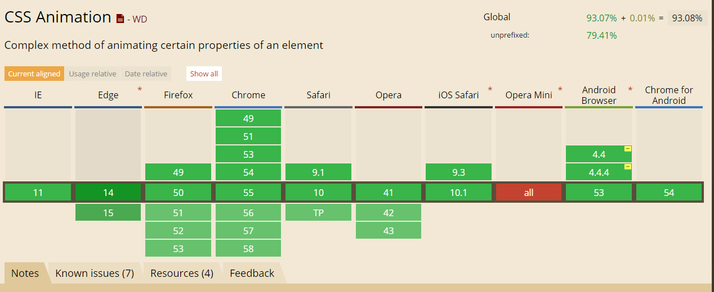

css-keyframes-animation
大家好，今天给大家介绍一下@keyframes的用法。
— 好像并没有人 —
定义
@keyframes 让开发者通过指定动画中特定时间点必须展现的关键帧样式（或者说停留点）来控制CSS动画的中间环节。这让开发者能够控制动画中的更多细节而不是全部让浏览器自动处理。
要使用关键帧, 先创建一个带名称的@keyframes规则，以便后续使用 animation-name 这个属性来调用指定的@keyframes. 每个@keyframes 规则包含多个关键帧，也就是一段样式块语句，每个关键帧有一个百分比值作为名称，代表在动画进行中，在哪个阶段触发这个帧所包含的样式。
关键帧的编写顺序没有要求，最后只会根据百分比按由小到大的顺序触发。
使用
先定义@keyframes，这里有俩
|
在使用的地方，通过关键字animation引用：
|
未完待续
人生经验
让关键帧序列生效
为了让一个关键帧列表有效，它必须至少包含了对0%（或from）和100%（或to）即动画的开头帧和结束帧的定义。 如果都没有进行定义，那么整个@keyframes 是无效的，不能使用。
如果在关键帧的样式中使用了不能用作动画的属性，那么这些属性会被忽略掉，支持动画的属性仍然是有效的，不受波及。
重复定义（Duplicate resolution）
如果多个关键帧使用同一个名称，以最后一次定义的为准。
@keyframes不存在层叠样式(cascade)的情况，所以动画在一个时刻（阶段）只会使用一个的关键帧的数据。如果一个@keyframes 里的关键帧的百分比存在重复的情况，以最后一次定义的关键帧为准。 因为
@keyframes的规则不存在层叠样式(cascade)的情况，即使多个关键帧设置相同的百分值也不会全部执行。属性个数不定
如果一个关键帧中没有出现其他关键帧中的属性，那么这个属性将使用插值(不能使用插值的属性除外, 这些属性会被忽略掉)。例如：
@keyframes identifier {
0% { top: 0; left: 0; }
30% { top: 50px; }
68%, 72% { left: 50px; }
100% { top: 100px; left: 100%; }
}
|
帧列表的名称。 名称必须符合 CSS 语法中对标识符的定义。
from
等效于 0%.
to
等效于 100%.
动画序列中，触发关键帧的时间点，使用百分值来表示。
浏览器兼容
